Един от любимите моменти на стопаните с техните питомци са точно ежедневните разходки с
техния четирикрак приятел - махаща опашка и широки крачки, допринасящи и за физическото, и
за емоционалното здраве на двете половини.
Колкото и малък да изглежда света тогава, покрай Вас и Вашия любимец има и други същества,
някои - видими, а други - незабележими и чакащи да намерят някой домашен питомник, от който
може да се хранят, а именно говорим за паразитите.
Това са паразитите - организми (те биват не само животни, но и растения), които се хранят за
сметка на друг организъм, като му вредят.
И докато стопаните не ги забелязват, те си остават в заобикалящата ги среда, чакат да
намерят гостоприемник, от който да се хранят. И в някои случаи намират питомци, като нерядко
паразитите нападат и стопаните, което означава, че ние чрез здравето на животните си се
грижим и за здравето си.
За да стане по-ясно какво представляват паразитите, Ви препоръчваме да прочетете по-надолу
преди да преминете към самото обезпаразитяване:
Други вектори (т. е. преносители на заболявания) са комарите и
някои видове мухи, макар че те не се причисляват към външните
паразити. (Виж: Дирофилариоза, Лайшманиоза, Телазиоза).
са плоски червеи, чието тяло е начленено. Най-често
паразитират в червата на кучетата и котките и може да причиняват храносмилателни проблеми като
диария и загуба на тегло, а в други случаи заразените животни нямат симптоми и заразяват хората.
Заболявания, които причиняват, са:
Биологичен цикъл: И външните, и вътрешните паразити имат
биологичен цикъл, който започва от яйце, от което се излюпва ларва, която става
възрастен паразит. Различните паразити имат различни биологични цикли и в повечето
случаи не са така прости, както предходния пример.
Заразяване: Когато кучето влезе в контакт с тези паразити
(или с техните яйца или ларви), то може да се зарази. Паразити може да бъдат открити в
тревисти местности или във фекалиите на вече заразени животни, както и във заразени
води, храни, дори по обувките и по дрехите на собствениците на животни. Яйцата на
паразитите са незабележими, което допринася за тяхното разпространение.
Размножаване: След като кучето се зарази с паразити,
последните започват да се намножават и започват да причиняват здравословни проблеми на
домашния любимец.
Напр. при заразяване с бълхи кучетата започват да се чешат непрестанно, което може да
доведе до възпаление на кожата, или до по-сериозни проблеми като FAD (Алергичен
дерматит, причинен от бълхи).
При заразяване с някои вътрешни паразити, като тениите, може да се появят здравословни
проблеми с храносмилателната система като диария, а паразитът дирофилария навлиза в
сърцето и може да доведе до смърт.
За да не се стигат до сериозни здравословни проблеми, е важно да се извършват редовни прегледи при ветеринарния лекар, който според
индивидуалните характеристики на животното да предприеме специфична профилактика спрямо
паразитите.
Обезпаразитяването на кученцата трябва да започне още през
втората седмица след раждането, защото точно тогава те са възприемчиви към паразити,
които се предават чрез плацентата и чрез млякото. (Виж: Токсокароза, Токсаскаридоза,
Анкилостомоза, Трихуроза по кучетата). Също така, няколко дни до седмица преди
ваксинация кученцата трябва да бъдат обезпаразитени, за да бъдат здрави. (Виж:
Ваксинация).
Обезпаразитяването продължава до 12-седмична възраст, като след това се препоръчва да се
извършва на всеки месец (най-удобно за запомняне е когато се избере точна дата).
Препоръчително е през времето, когато се третират кученцата, да се третират и техните
майки. За контрол на Toxocara canis кърмещите кучки трябва да се третират на втората
седмица след раждането и на всеки две седмици до отбиването.
Но защо трябва да обезпаразитявам любимеца си
ежемесечно? Защото някои паразити имат т. нар. биологичен цикъл - т. е. на
по-разбираем език, както едно бебе става дете, тийнейджър и възрастен, то така и от едно
яйце на паразит се излюпва ларва, която става възрастен паразит. За този биологичен
цикъл трябва време и затова оптималното време, през което може този цикъл да бъде
прекъснат, е през 30 дни. Разбира се, от любимец до любимец има разлика и затова при
някои (както са при котките, които се гледат само в затворени пространства) интервалът,
през който се дава обезпаразитяващо средство, е по-голям заради по-малката вероятност от
опаразитяване на животното. Точно поради тази причина схемите за
обезпаразитяване и ваксинация се правят от ветеринарни лекари.
И след като въпросите „Защо?“ и „Кога?“, свързани с обезпаразитяването се изясниха,
следва да се отговори на въпросът „С какво?“.
Продуктите, които можете да изберете, се продават в търговската мрежа в различни форми,
размери и разфасовки, но те най-общо се класифицират спрямо начина им на приложение. В
таблицата са описани техните характеристики:
| Тип препарат |
Какво представлява? |
Тип паразити |
| Дъвчащи таблетки |
Малки капсулки, които се дават през устата |
Вътрешни и външни |
| Спот-он форми |
Малки пипетки, които се изливат върху козината на кучето |
Външни |
| Инжективни продукти |
Инжекции, които се поставят подкожно |
Вътрешни и външни |
| Пасти и пудри |
Прахоподобни препарати, които се изливат или размазват върху кожата |
Външни |
| Каишки |
Напоени с препарат каишки, които се поставят върху врата на животното |
Външни |
Като се има предвид агресивната природа на паразитите, често комбинацията от няколко
продукта води до най-добри резултати. Не бива да забравяте, че обезпаразитяването е
непрекъснат процес, който трябва да се следи по календарни дни и схема, която е
съставена от ветеринарен лекар.
По-надолу са дадени някои противопаразитни продукти:
- Срещу външни паразити
- Срещу външни и вътрешни паразити
- Срещу вътрешни паразити
Срещу външни паразити:
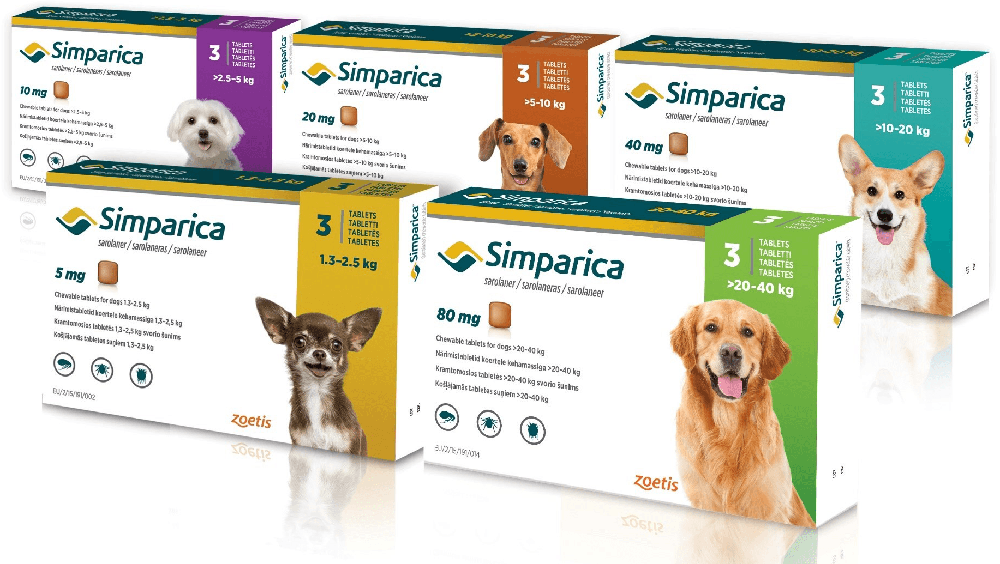
Simparica дъвчащи таблетки за кучета, различни разфасовки спрямо
килограмите на кучето
Съдържа: sarolaner
Действие: срещу външни паразити (бълхи, кърлежи,
кожна и ушна красти)
Описание: Ветеринарномедицинският продукт има
незабавен ефект и продължителна способност да убива бълхите и кърлежите за период от
поне 5 седмици. Паразитите трябва да започнат да се хранят от гостоприемника, за да
бъдат изложени на действието на sarolaner, поради това предаването на векторни
заболявания не може да се изключи.
Продуктът се използва за лечение на: саркоптесова
краста, ушна краста, демодекоза.
Възможни неблагоприятни реакции: гастроинтестинални
смущения (повръщане, диария и др.), летаргия, безапетитие, неврологични смущения
(тремор, атаксия, конвулсии).
Породни специфики: Sarolaner се приема добре от
кучета от порода Коли с изследван дефицит на мултилекарствен резистентен протеин MDR1
-/- (multidrug-resistance-protein), след еднократно перорално прилагане в дози, 5 пъти
надвишаваща препоръчаната.
Линк за повече информация:
тук
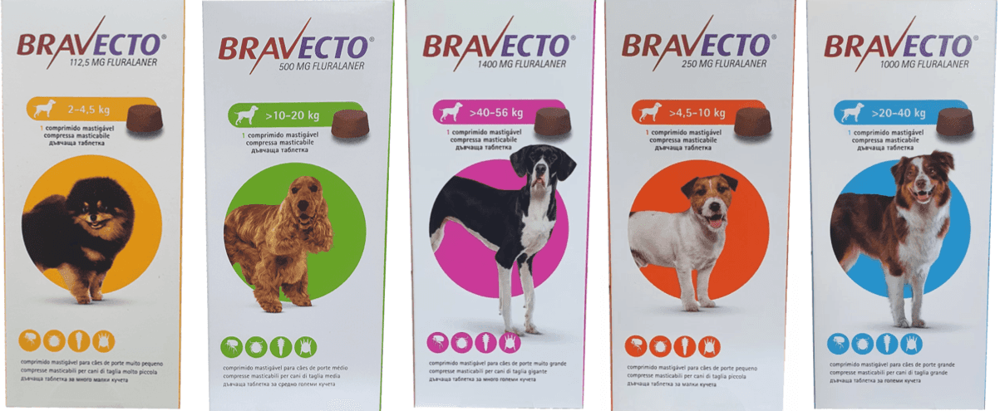
Bravecto дъвчащи таблетки за кучета
Съдържа: fluralaner
Действие: срещу външни паразити (бълхи и кърлежи,
кожна и ушна красти)
Описание: Този ветеринарномедицински продукт
осигурява:
- незабавна и продължителна активност, убиващ бълхите (Ctenocephalides felis) кърлежите
Ixodes ricinus, Dermacentor reticulatus и D. variabilis за 12 седмици;
- и незабавна и продължителна активност, убиващ кърлежите Rhipicephalus sanguineus за 8
седмици.
Продуктът се използва за лечение на: саркоптесова
краста, демодекоза.
Възможни неблагоприятни реакции: гастроинтестинални
смущения (повръщане, диария и др.), летаргия, безапетитие, неврологични смущения
(тремор, атаксия, конвулсии).
Породни специфики: Sarolaner се приема добре от
кучета от порода Коли с изследван дефицит на мултилекарствен резистентен протеин MDR1
-/- (multidrug-resistance-protein), след еднократно перорално прилагане в дози, 5 пъти
надвишаваща препоръчаната.
Бременност: Може да се прилага по време на
бременност, лактация и при животни за разплод.
Линк за повече информация:
тук
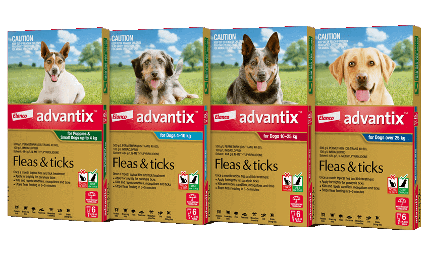
Advantix, spot-on разтвор за кучета, различни разфасовки
Съдържа: imidacloprid, permethrin
Действие: срещу външни паразити (бълхи, кърлежи,
въшки, пясъчни и кръвосмучещи мухи)
Описание: Едно третиране предпазва от повторно
опаразитяване с бълхи за 4 седмици, с кърлежи за 3-4 седмици, с пясъчни мухи - 2-4
седмици и с кръвосмучещи мухи - 4 седмици.
Продуктът се използва за лечение на: опаразитяване
с въшки.
Възможни неблагоприятни реакции: локален сърбеж и
алопеция, гастроинтестинални смущения (повръщане, диария и др.), летаргия, безапетитие,
неврологични смущения (тремор, атаксия, конвулсии).
Бременност: Може да се прилага по време на
бременност и лактация.
Линк за повече информация:
тук
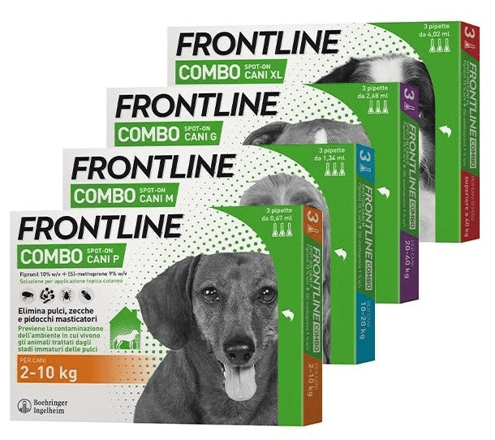
Frontline COMBO spot-on разтвор за кучета
Съдържа: fipronil
Действие: срещу външни паразити (бълхи, кърлежи,
въшки)
Описание: Ефикасността му срещу бълхи продължава 8
седмици, а срещу кърлежи - 4 седмици.
Линк за повече информация:
тук
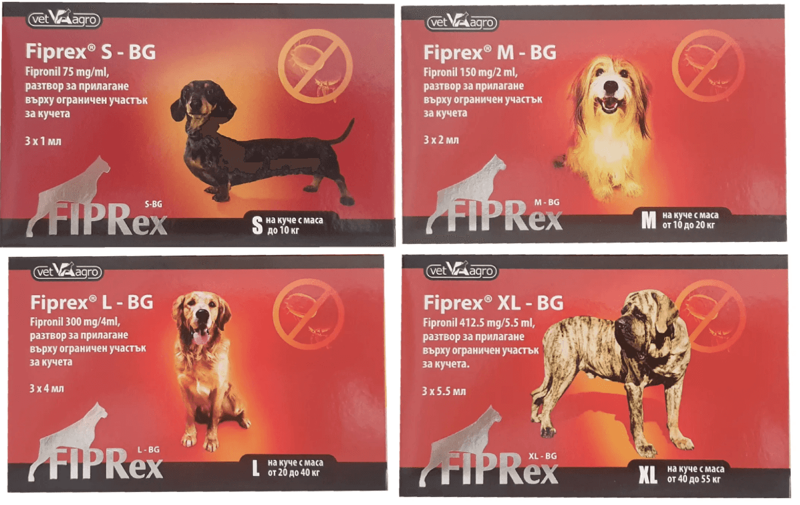
Fiprex spot-on разтвор за кучета
Съдържа: fipronil
Действие: срещу външни паразити (бълхи, кърлежи,
въшки)
Описание: Ефикасността му срещу бълхи e 3 месеца и
срещу кърлежи е 1 месец.
Линк за повече информация:
тук
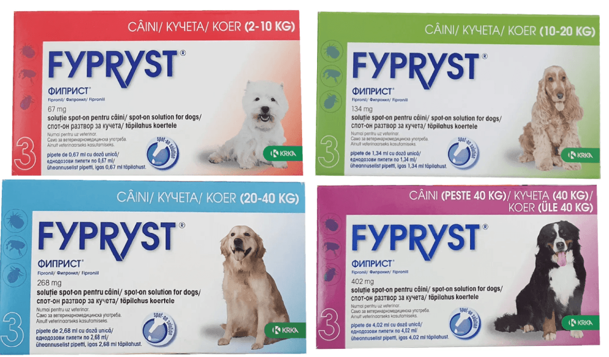
Fypryst spot-on разтвор за кучета
Съдържа: fipronil
Действие: срещу външни паразити (бълхи, кърлежи,
въшки)
Описание: Ефикасността му срещу бълхи e 3 месеца и
срещу кърлежи е 1 месец.
Линк за повече информация:
тук
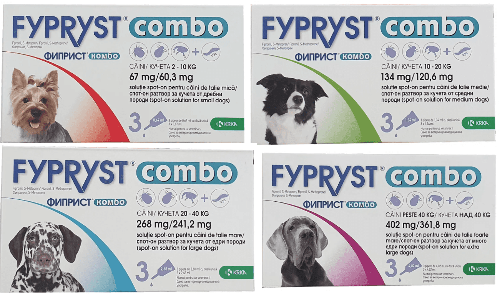
Fypryst COMBO spot-on разтвор за кучета
Съдържа: fipronil, S-Methoprene
Действие: срещу външни паразити (бълхи, кърлежи,
въшки)
Описание: Ефикасността му продъжава 1 месец.
Линк за повече информация:
тук
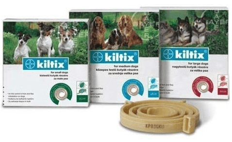
Kiltix - противопаразитна каишка за кучета
Съдържа: propoxur, flumethrin
Действие: срещу външни паразити (бълхи и кърлежи)
Описание: След поставяне, каишката запазва
ефективността си срещу кърлежи и бълхи, най-малко в продължение на 7 месеца.
Линк за повече информация:
тук
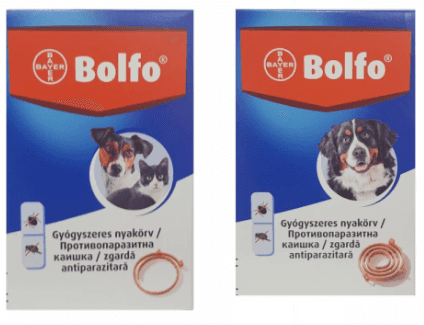
Bolfo - противопаразитна каишка за кучета под 10 кг и котки/ за кучета с
тегло 10-40 кг
Съдържа: propoxur
Действие: срещу външни паразити (бълхи и кърлежи)
Описание: Ефикасността му продължава 3 месеца.
Линк за повече информация:
тук
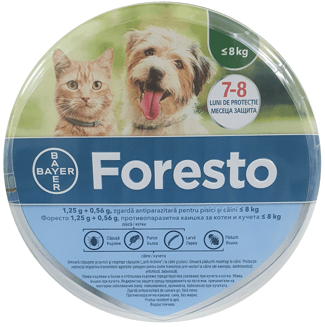
Foresto - противопаразитна каишка за кучета и котки
Съдържа: imidacloprid, flumethrin
Действие: срещу външни паразити (бълхи и кърлежи)
Описание: Ефикасността му срещу бълхи и кърлежи
продължава 8 месеца.
Противопоказания: Да не се използва при кучета под
7-седмична възраст и при котки под 10-седмична възраст.
Линк за повече информация:
тук
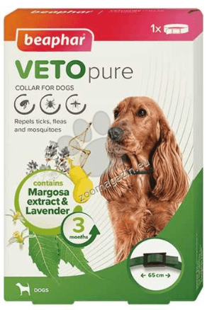
Beaphar Veto Pure Bio - противопаразитна каишка за кучета на билкова
основа
Съдържа: екстракт от маргоза, лавандула.
Действие: срещу външни паразити (бълхи, комари и
кърлежи)
Описание: Ефикасността му продължава 3 месеца.
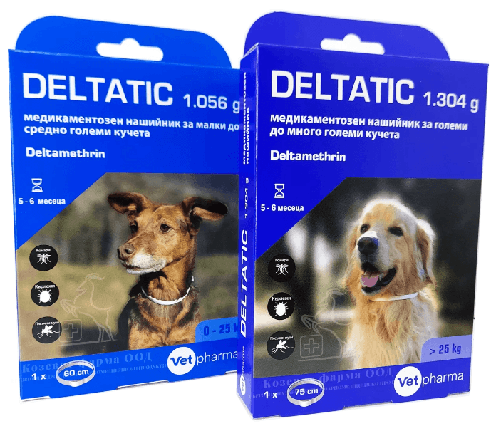
Deltatic - противопаразитна каишка за кучета
Съдържа: deltamethrin
Действие: срещу външни паразити (бълхи и кърлежи),
комари, пясъчни мухи
Описание: Ефикасността му продължава 5 месеца.
Линк за повече информация:
тук
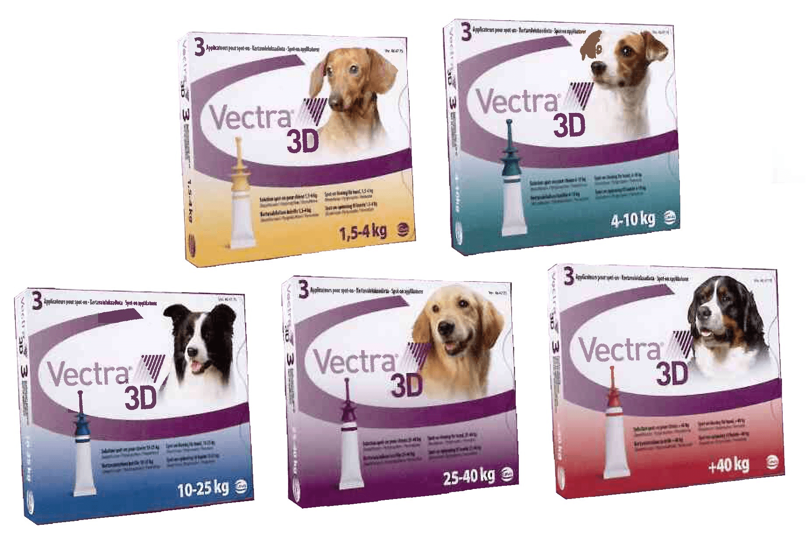
Vectra - spot-on разтвор за кучета
Съдържа: Dinotefuran, pyriproxyfen, permethrin
Действие: срещу външни паразити (бълхи, кърлежи,
комари, пясъчни и хапещи мухи)
Описание:
Линк за повече информация:
тук
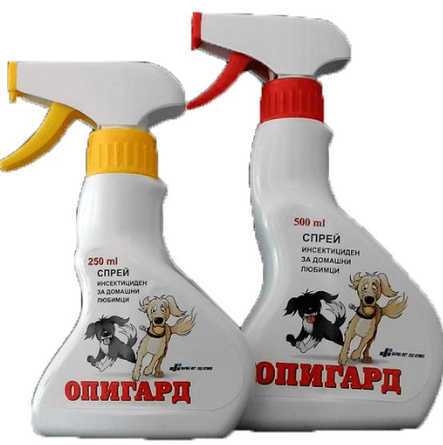
Опигард - инсектициден спрей за кожа за кучета
Съдържа: carbaryl
Действие: срещу външни паразити
Начин на приложение: върху кожата. Напръсква се
засегнатата област от разстояние 15-20 сm срещу косъма до овлажняване, еднократно през
интервал от две-три седмици.
Линк за повече информация:
тук
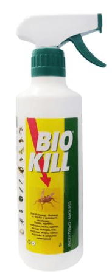
Био Кил - инсектициден спрей за помещения
Съдържа: permethrin
Действие: срещу насекоми (бълхи, мравки, хлебарки,
мухи, щурци, молци, комари, оси, гъгрици, акари, паяци и кърлежи)
Начин на приложение: Напръскайте с Био Кил стени,
тавани, прозорци или директно по ъглите и местата, където има насекоми.
> пръскането се повтаря след 4 седмици.
> За предпазване от ектопаразити, домашните животни се пръскат външно, еднократно.
> При домашни животни с по-дълъг косъм може и двукратно, като козината се сресва на
обратната страна.
> В затворени помещения проветрявайте 15 минути след приложението на препарата.
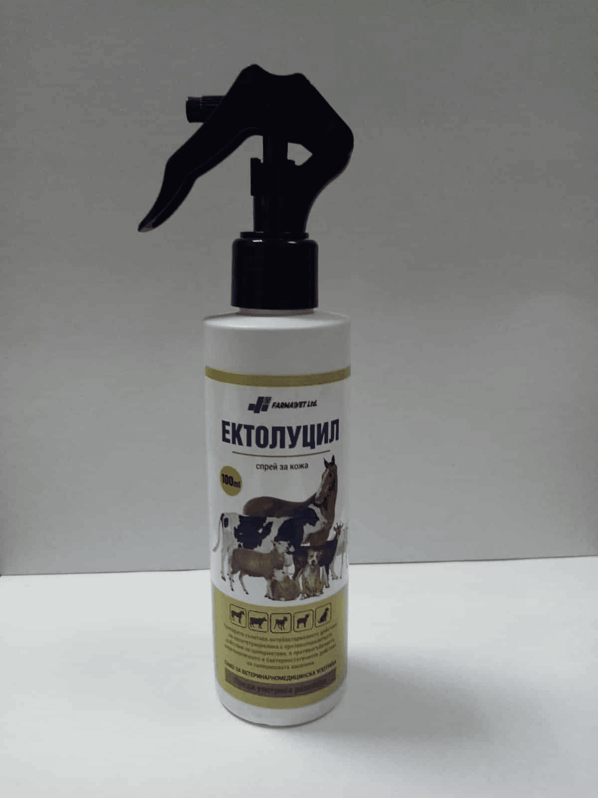
Ектолуцил - спрей за кожа
Съдържа: oxytetracycline, cypermethrin, salicylic
acid.
Действие: срещу бълхи, кърлежи и въшки.
За лечение на: хейлетиелоза и тромбикулоза при
кучетата.
Начин на приложение: външно, локално, чрез
напръскване.Напръскват се заболелите участъци от разстояние 10-15 cm един път дневно в
продължение на 2-3 дни. След 15 дни процедурата се повтаря.
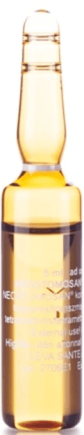
Неостомозан ампула за обезпаразитяване на кучета, котки, помещения
Съдържа: transmix, tetramethrin
Действие: срещу бълхи, кърлежи и въшки.
За лечение на: демодекоза, саркоптоза, хейлетиелоза
и ушна краста.
Начин на приложение:
За контролиране популацията на летящи и пълзящи насекоми вкл. мухи: Напръскайте с
разтвор 1:1000 (1 л НЕОСТОМОЗАН концентрат към 1000 л вода) през интервал от 2-3
седмици. Еднократното прилагане на препарата води до значително редуциране на
популацията на мухи и насекоми за период от 2 до 3 седмици.
Кучета и котки: Необходим е разтвор 1:400 до 1:200 за къпане, потапяне или
напръскване на животните. В случай на опаразитяване с бълхи или въшки трябва да се
намаже цялото тяло на животното, както и да се напръска колибката му.
Линк за повече информация:
тук
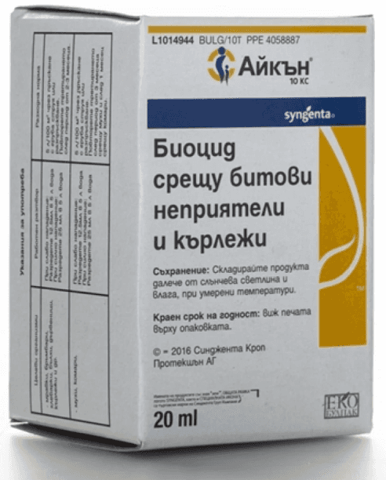
Айкън - инсектицид
Действие: срещу хлебарки, бълхи, кърлежи, мравки,
мухи, дървеници, комари.
Линк за повече информация:
тук
Срещу външни и вътрешни паразити:
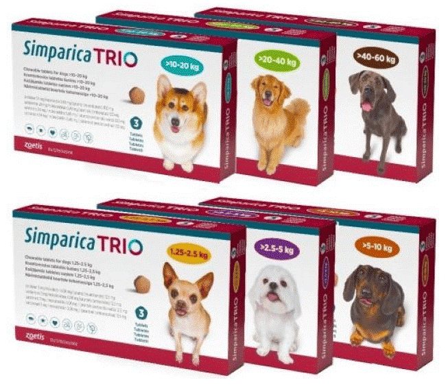
Simparica Trio дъвчащи таблетки за кучета
Използва се за превенция и лечение на
дирофилариоза.
Съдържа: sarolaner, moxidectin, pyrantel
Действие: срещу външни паразити (бълхи,
кърлежи) и вътрешни паразити (кръгли червеи, вкл. анкилостоми и сърдечни червеи).
Описание: За опаразитяване с бълхи или кърлежи
едно третиране със Simparica Trio е ефективно за период до 5 седмици.
Линк за повече информация:
тук
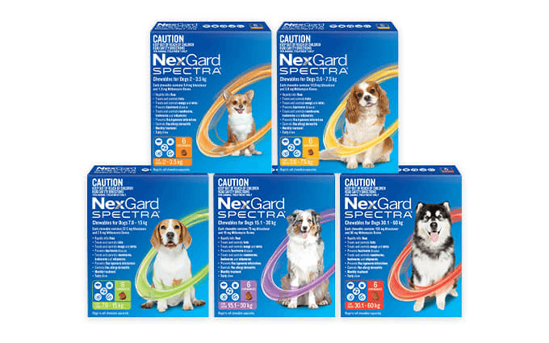
NexGard Spectra дъвчащи таблетки за кучета.
Използва се за превенция на дирофилариоза.
Съдържа: afoxolaner, milbemycin oxime
Действие: срещу външни паразити (бълхи,
кърлежи) и вътрешни паразити (кръгли червеи, вкл. анкилостоми и дирофиларии).
Не обхваща плоските червеи (тении)
За лечение на: сифонаптероза (опаразитяване
с бълхи), педикулоза (опаразитяване с въшки), демодекоза, саркоптоза и ушна
краста.
Описание: Третиране при опаразитяване с
бълхи за 5 седмици, а с кърлежи - за 4 седмици. Бълхите и кърлежите трябва да се
прикрепят към гостоприемника и да започнат хранене за да бъдат изложени на
въздействието на активните субстанции.
Линк за повече информация:
тук
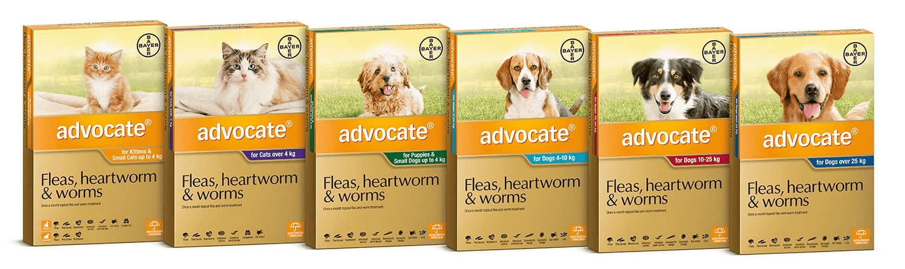
Advocate spot-on за кучета
Използва се за превенция и лечение на
дирофилариоза.
Съдържа: imidacloprid, moxidectin
Описание: Ефикасността му продължава 1
месец.
Действие: срещу външни паразити (бълхи
и въшки, крастни кърлежи) и вътрешни паразити (телазия, белодробни паразити,
дирофилария, токсокара, анкилостома)
Не обхваща кърлежите и плоските червеи (тении)
За лечение на: сифонаптероза
(опаразитяване с бълхи), педикулоза (опаразитяване с въшки), демодекоза,
саркоптоза и ушна краста.
Линк за повече информация:
тук
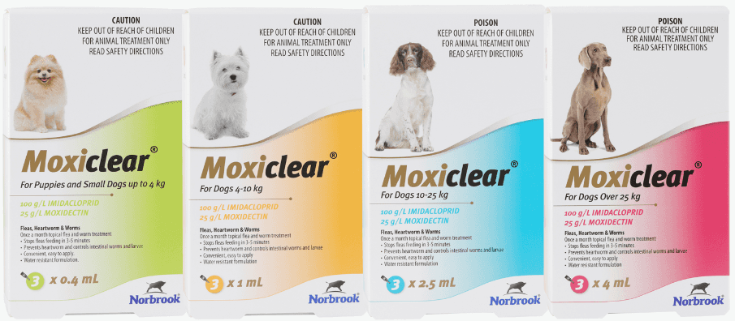
Moxiclear spot-on за кучета
Използва се за превенция и лечение на
дирофилариоза.
Съдържа: imidacloprid, moxidectin
Описание: Ефикасността му
продължава 1 месец.
Действие: срещу външни паразити
(бълхи и въшки, крастни кърлежи) и вътрешни паразити (телазия,
белодробни паразити, дирофилария, токсокара, анкилостома)
Не обхваща кърлежите и плоските червеи (тении)
За лечение на: сифонаптероза
(опаразитяване с бълхи), педикулоза (опаразитяване с въшки), демодекоза,
саркоптоза и ушна краста.
Линк за повече информация:
тук
Срещу вътрешни паразити:
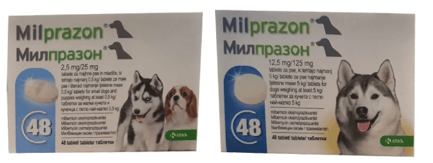
Mилпразон таблетки за кучета
Използва се за превенция на
дирофилариоза.
Съдържа: milbemycin oxime,
praziquantel
Действие: срещу вътрешни
паразити (плоски и кръгли червеи, вкл. и дирофиларии)
Възможни неблагоприятни
реакции: гастроинтестинални смущения (повръщане, диария и
др.), сънливост, неврологични смущения и др.
Дозировка: 1 табл/ 5 кг или 1
табл/25 кг. Прилага се директно в устата или смесена с храна.
Препоръчва се да се даде директно преди хранене.
За лечение на: опаразитяване с
кръгли и пловки червеи, вкл. ангилостомоза и телазиоза.
Внимание: Да не се използва с
пиперазин.
Линк за повече информация:
тук
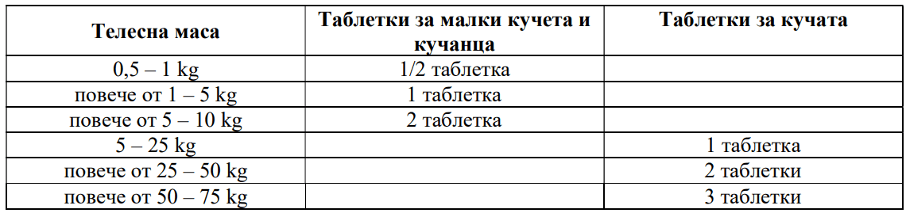
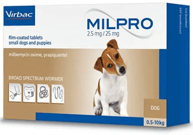
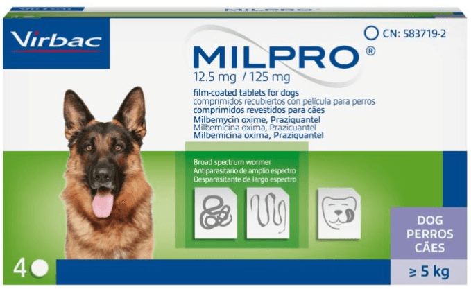
Милпро Дог 2,5 мг / 12.5 мг - таблетки за малки
кучета и кученца / за кучета
Използва се за превенция на
дирофилариоза.
Съдържа: milbemycin oxime,
praziquantel
Действие: срещу вътрешни
паразити (плоски и кръгли червеи, вкл. и дирофиларии)
Възможни неблагоприятни
реакции: гастроинтестинални смущения (повръщане,
диария и др.), сънливост, неврологични смущения и др.
Дозировка: 1 табл/ 5 кг или
1 табл./ 25 кг. Прилага се директно в устата или смесена с
храна. Препоръчва се да се даде директно преди хранене.
За лечение на:
опаразитяване с кръгли и плоски червеи.
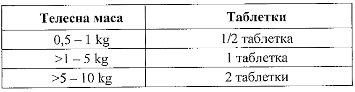
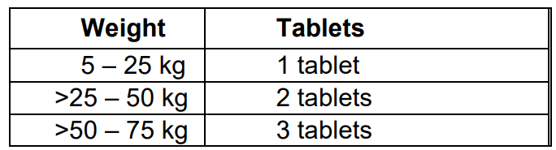
Линк за повече информация:
тук
Линк за повече информация:
тук
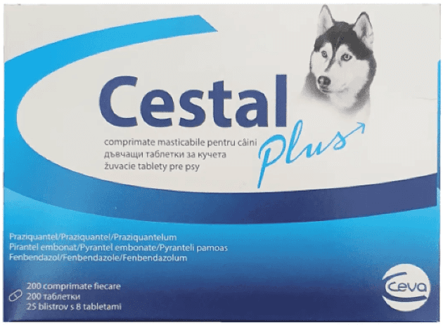
Цестал Плюс таблетки за кучета
Съдържа: praziquantel,
pyrantel, fenbendazole
Действие: срещу вътрешни
паразити (плоски и кръгли червеи)
Възможни неблагоприятни
реакции: гастроинтестинални смущения (повръщане,
диария и др.), сънливост, неврологични смущения и др.
Дозировка: 1 табл/ 10 кг
(максимум 4 хапчета на куче). Прилага се директно в устата или
смесена с храна (месо, колбас) . Не
е необходимо гладуване преди или след третирането.
За лечение на:
опаразитяване с кръгли и плоски червеи
Линк за повече информация:
тук
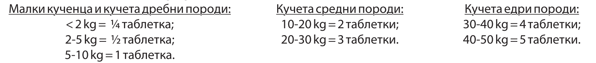
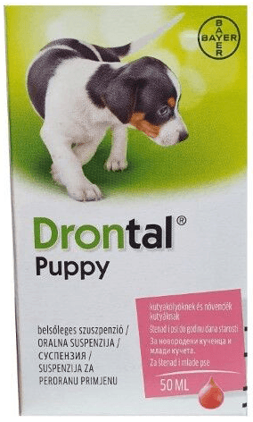
Drontal Puppy - перорална суспензия за новородени
и малки кученца
Съдържа: febantel, pyrantel
Действие: срещу вътрешни
паразити (кръгли червеи като аскариди, анкилостоми и трихуриди).
Описание: Предназначен е за
новородени кученца и млади кучета.
Възможни неблагоприятни
реакции: гастроинтестинални смущения (повръщане,
диария и др.).
Дозировка: 1 мл/кг. Прилага
се директно в устата или смесена с
храна, като не е необходима предварителна диета.
Внимание: Да не се използва
с пиперазин.
Линк за повече информация:
тук
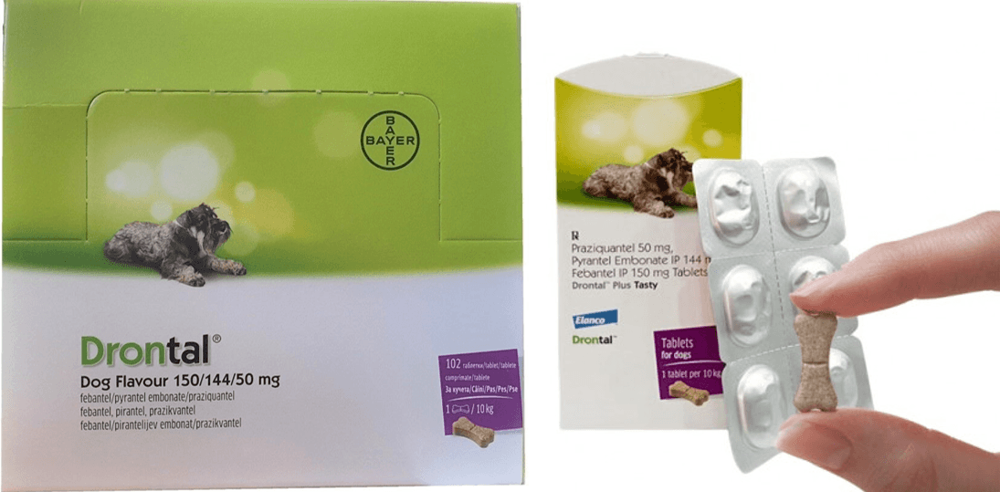
Дронтал Плюс овкусени таблетки за кучета
Съдържа: Febantel,
pyrantel, praziquantel
Действие: срещу вътрешни
паразити (аскариди, анкилостоми, трихуриди, тении)
Възможни неблагоприятни
реакции: гастроинтестинални смущения (повръщане,
диария и др.).
Дозировка: 1 табл/ 10 кг.
Прилага се директно в устата или смесена с
храна. Препоръчва се да се даде директно преди
хранене.
Внимание: Да не се използва
с пиперазин.
Линк за повече информация:
тук
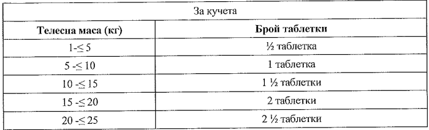
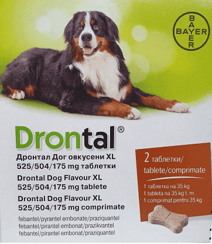
Drontal Dog XL дъвчащи таблетки за кучета
Съдържа: Febantel,
pyrantel, praziquantel
Действие: срещу вътрешни
паразити (аскариди, анкилостоми, трихуриди, тении)
Описание: Таблетките могат
да бъдат приемани с или без храна.
Достъпът до храна не трябва да се ограничава преди или след
приложението.
Линк за повече информация:
тук
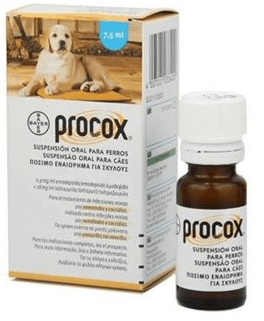
Прококс - перорална суспензия за кучета
Съдържа: emodepside,
toltrazuril
Действие: срещу вътрешни
паразити (кръгли червеи като токсокара, унцинария и анкилостома,
и кокцидии)
Описание: За перорална
употреба при кучета от двуседмична възраст и тегло най-малко 0,4
кг.
Дозировка: 0.5 мл/кг.
Разклати преди употреба. Прилага се директно в устата.
Линк за повече информация:
тук
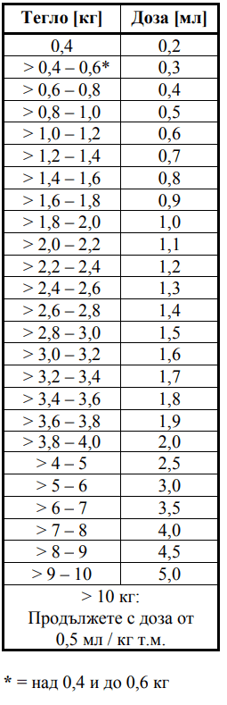
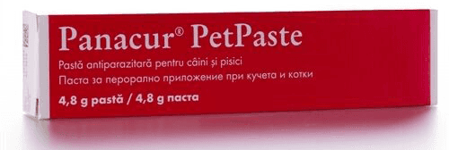
Panacur PetPaste/ Панакюр ПетПейст - перорална
суспензия за кучета и котки
Съдържа: fenbendazole
Действие: срещу вътрешни
паразити (кръгли червеи като токсокара, унцинария и анкилостома)
Описание: Може да се
използва при малки котенца, котки, малки кученца и кучета.
Прилага се след хранене, направо в
устата, като съдържанието се впръсква в основата на езика или
се смесва с храната.
Линк за повече информация:
тук
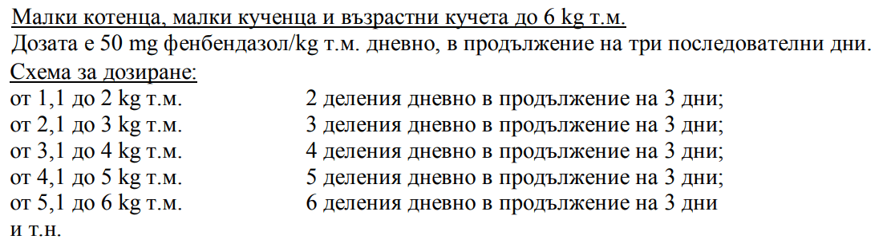
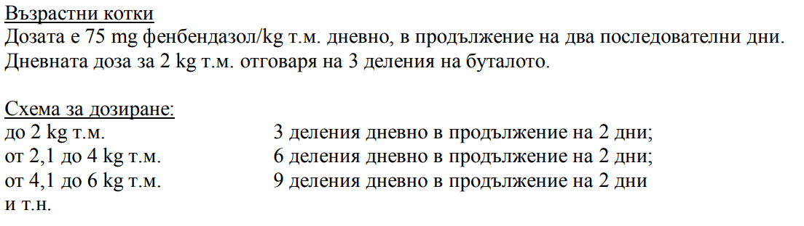
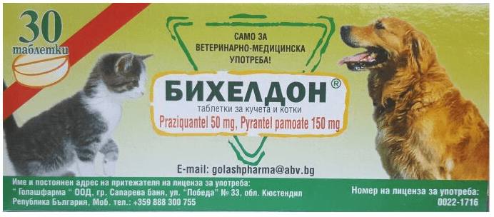
Бихелдон таблети за кучета и котки
Съдържа: praziquantel,
pyrantel
Действие: срещу вътрешни
паразити (кръгли червеи, вкл. и тении, токсокари, анкилостоми)
Описание: Бихелдон таблетки
не трябва да се прилагат заедно с храната за деня. Препоръчва се
обезпаразитяването да се извършва през три месеца.
Дозировка: 1 табл./10 кг.
Внимание: Да не се използва
с пиперазин (усилва действието на пирантела).
Линк за повече информация:
тук
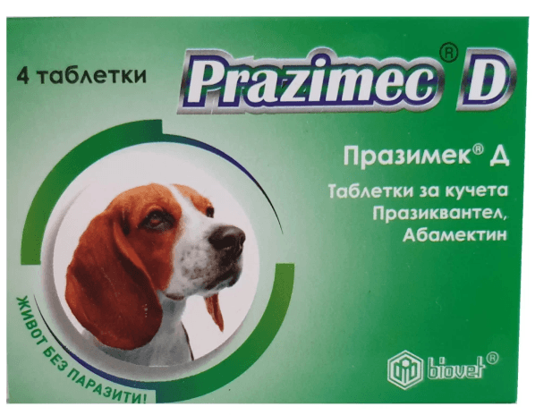
Празимек-Д таблети за кучета
Съдържа: praziquantel,
abamectin
Действие: срещу вътрешни
паразити (кръгли и плоски червеи, вкл. и филарии на сърцето)
Противопоказания: Да не
се ползва при кучета от породите Коли, Шелти и Бобтейл. Да не се
ползва при малки кученца под 2-месечна възраст.
Дозировка: 1 табл/ 10 кг.
Прилага се директно в устата или смесена с
храна. Не се прилагат повече от 4 таблетки еднократно
при кучета с тегло над 40 кг телесна маса.
Линк за повече информация:
тук
Помогни на повече стопани да се грижат правилно за своите мили любимци:

Инстаграм

Изпрати по имейл

Принтирай


{kind=link}
{kind=link}